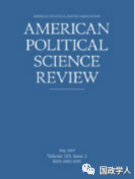

收录于合集

简 介
** 【作者】** 安德烈亚斯·维默（Andreas Wimmer）：哥伦比亚大学社会学和政治社会学教授，主要研究方向为民族国家的形成、政治冲突、文化与社会变化。主要著作有《国家构建：为什么有些国家形成而另一些国家分崩离析》（Nation Building: Why Some Countries Come Together While Others Fall Apart）。
** **【 编译 】****柯孜凝
** **【 校对 】****赵炜婷
** **【 审核 】****王国欣 刘金晶
** **【 来源 】****Andreas Wimmer, Why Nationalism Works: And Why It Isn’t Going Away, Foreign Affairs, 2019(98), 27-34.
** 【期刊】** 《外交事务》（Foreign Affairs），由美国外交关系委员会(Council on Foreign Affairs)出版，成立于1922年。根据2014年的期刊引文报告,该期刊的影响因子为2.009，在“国际关系”类别的85种期刊中排名第6。

民族主义为何有效
Why Nationalism Works：And Why It Isn’t Going Away
Andreas Wimmer
内容提要
民族主义在当下声名狼藉。在受过教育的西方人眼中，民族主义是一种危险的意识形态。他们中的一些人承认爱国主义是美好的品德，是个人对祖国的热爱，他们同时认为民族主义是狭隘的和不道德的，使得人们对国家盲目忠诚。本文作者抛弃了对民族主义的固有偏见与否定，反而为民族主义正名，指出了民族主义在当下大行其道的合理性以及有效性，并为如何建设一个更好的民族主义提出了构想。
全文共分为六个部分：第一部分作者论述了民族主义与当代政治的关系，第二部分作者回溯了民族国家的构建历史，第三部分作者论述了民族主义的好处，第四部分作者讨论了民族主义的负面影响，第五部分作者提出了民族主义具有保护与排斥两种形态，第六部分作者提出了建设一个更好的民族主义的构想。
文章导读
近年来，遍布西方的民粹主义者妄图逆转现有的道德秩序。民粹主义者们高歌着民族主义，发誓会保证大多数人的利益免受少数移民和精英群体的威胁。民粹主义的批判者们则坚持在有害的民族主义和有价值的爱国主义之间划清界限。正如法国总统马克龙所说“民族主义是对爱国主义的背叛”。
爱国主义与民族主义的显著差异与学者们所认为的文明的民族主义与种族的民族主义间的差异如出一辙。文明的民族主义认为不论文化背景都属同一民族，种族的民族主义则认为血统和语言决定民族身份。然而，对文明的爱国主义和种族的民族主义之间划分界限的努力则忽视了二者共同的起源。 作者认为，爱国主义是民族主义的一种形式，他们是一对意识形态的兄弟而不是远方表亲。
作者提出所有形式的民族主义都信奉两个核心信条： 第一，民族成员知道 彼此 是 属于同一群体的平等公民，拥有着共同的历史和政治命运，应该掌控国家。第二，他们需要基于民族的利益而行动 。因此，民族主义反对其他民族对本国进行统治，反对殖民国家和其他王朝国家以及那些忽视大多数人意愿的统治者。
在过去的两个世纪，民族主义裹挟着各种形式的政治意识形态发展。自由民族主义盛行于19世纪的欧洲和拉丁美洲，法西斯民族主义在战争期间占领了意大利和德国的意识形态领域，马克思民族主义推动了二战后的反殖民运动发展。如今，无论是左翼还是右翼都认同民族主义的两种核心信条的合法性。当对照其他形式的国家合法性论述时，这种认同变得更加明显。在神权国家统治下，国家应当是以神的名义被统治；在王朝国家中，国家是被家族统治的；在苏联，国家应被某一阶级所统治，即国际无产阶级。
自苏联解体后，世界上的民族国家就依据民族主义的准则进行统治，作者认为应将 民族主 义置于政治权力的发展脉络 中予以 检视，避免忽略 其对现代政治意识形态的塑造作用 。 事实证明，民主、福利国家和公共教育等观念是借助一群人的共同目的和义务的名义而具有正当性的。民族主义也是最易动员人民的力量。
民族主义不是一种可以被排除在当代政治之外、毫无理性的情感。作者认为民族主义是构成现代世界的基本准则之一。正如没有美国人愿意被法国贵族统治，也没有尼亚加拉人愿意重新处于英国统治之下。
作者认为，毫无例外，我们都是民族主义者。
**1
**
** 民族国家因建构而生 **
民族主义是相对近期的产物。1750年，多民族帝国如奥地利、英国等控制着世界上大部分地区。随着1775年的美国独立革命和1789年法国大革命的爆发，民族主义的信条——本民族统治本国逐渐传遍整个世界。在随后的两个世纪中，帝国解体为无数个民族国家。
民族主义起源于现代欧洲。16至18世纪的欧洲战争不断，在这一过程中欧洲国家不断集权化和官僚化，并成为唯一提供公共财产的机构。权力的集中推动了语言的统一和市民社会的诞生。充满竞争的欧洲多国体系促使国家提高税收以增加军费开支，这反过来推动了政治参与的扩大以及公民对公共物品的需求的提高。最终形成了一种契约，即统治者应当依据人民的利益进行统治，只要他们据此行动就可以得到人民的忠诚、士兵和税收。 民族主义反映并合法化了这种契约，它强调统治者和被统治者都属于同一个民族，拥有共同的历史渊源和政治命运。
那么民族主义为何如此大受欢迎？作者认为有以下三个原因：
一. 对于统治者而言，民族主义能够提高国民的忠诚度，尤其是在军事行动中，同时民族主义也能提高国家的税收，进而使国家富强。
二. 对于具有野心的政治精英来说，民主主义是一种促进国家发展的政治模型。
三.对于大众而言，民族主义提供了一种更好的和政府交往的模式。民族主义保证了法律面前所有公民平等而不是社会地位决定权力，它给予了所有人开放的可能性。
**2
**
民族主义的好处
在统治者与被统治者间实现了民族主义契约的国家中，人民会认为国家是家庭的延伸，成员之间彼此忠诚和相互支持。作者认为民族主义为其他机制的积极发展奠定了基础。在这之中最重要的是对民主发展的影响。作者认为，民主繁荣于民族身份认同超越宗教、种族或部落等身份认之时。 民族主义解决了有关民主边界的问题，即政府应当以哪一群人的名义进行统治的问题。通过将选举权限制在本民族国民中，排除外国人的投票权，民主和民族主义紧密相连。
民族主义对于现代福利国家的建立也十分重要。 相互义务和共享政治命运的共识使得相互帮助处于困难中的本民族群体的观念更加盛行。 大多数欧洲的福利国家都是建立在民族主义狂热的时期，尤其是二战后作为对国家团结的回应。
**3
**
血腥的标语
民族主义也具有黑暗的一面。对本民族的忠诚可能导致对他者的妖魔化，如针对外国人或宣称不忠诚本国的国内少数群体的敌意。从全球范围看，民族主义的抬头导致了更加频繁的战争。
新民族国家的诞生也伴随着暴力的种族清洗。种族清洗可能是最具破坏性的民族主义暴力，但它极少发生。最频繁发生的民族主义暴力是内战，挑起战争者通常是意图脱离本国民族主义者少数派和或希望建立独立国家的种族集团。从1945年起有31个国家都饱受国家分离之苦。
**4
** 包容与排斥
尽管民族主义有导致暴力的倾向，但这种暴力发生的分布是不均的。大多数国家在向民族国家转型的过程中都是以较为和平的形式完成的，作者指出这与国家的治理形式和边界划分有关。
在一些国家中，多数人和少数人都能够在最高形式的政府中被代表，如瑞士。在另一些国家中，国家则是被代表特定民族集团的政府所掌控，排斥其他集团参与政治，其他集团质疑统治集团缺少正当性并引起动乱甚至内战，如当今的叙利亚。 作者认为特定国家中的权力构造是朝着更加包容还是排斥的方向发展早已由历史决定，在现代民族国家形成前就已经决定了。 包容型的统治联盟以及相关的民族主义会在长期集权、实行官僚主义的国家兴起。如今，这些国家更有能力为他们的公民提供公共产品，这使得这些国家作为普通公民的同盟者更具吸引力，公民的忠诚也逐渐从种族、宗教、部落领袖转移到国家上，从而使得更加多元的政治联盟出现。长期集权的国家也能够孕育出统一的语言，这同样有利于其在种族分野上建立政治联盟。在那些市民社会发展较早的国家，多种族联盟也更容易促进共同利益的产生，最终导向多元治理以及更加具有包容性的民族认同。
**5
** ****建立一个更好的民族主义 ****
不幸的是，包容性的权力构造发端于历史因素就意味着那些未建立包容性权力的国家将更难建立一个具有包容性的统治联盟。
作者认为要解决这一挑战需要多方助力。 西方政府和国际组织可以通过实施一系列长期政策推动政府提供公共产品、鼓励市民社会组织的发展以及推动语言一体化。 这些政策应当加强国家能力而不是损害国家运转。
对于美国及一些老派民主国家，作者认为解决公民对政府的 疏离 和怨恨的方式有所不同，需要同时推进文化和经济方案 。西方政府应当发展能够有利于所有公民的公共物品项目，避免种族的或政治偏好的认知；确保工人阶级、经济上处于边缘的全体也能够与比他们富裕的同胞团结一致；接受大多数和少数群体，强调他们共有的利益而不是宣扬白人至上。
新兴和老牌民族国家面临的挑战是更新统治者和被统治间的民族契约，这可以通过建立或重建具有包容性的联盟 来 连接双方。 作者认为温和的民族主义形式来源于政治包容，不是由意识形态强加的，也不能靠教化民众他们的真正利益是什么而实现。为了更好地推动民族主义的发展，领导者们需要成为一个更好的民族主义者，并且学习如何保护所有人民的利益。
译者简评
存在即是合理，那么民族主义作为当下盛行的政治意识形态是否是合乎常理的，或是合乎理性的？本文作者正是基于对民族主义的存在出发探讨了民族主义为何存在、为何盛行以及我们又该如何去面对它。民族主义的存在合乎历史逻辑，源于欧洲国家集权化和官僚化的趋势，而民族主义对于统治者、政治精英以及大众的好处又使得具有理性的人们会倾向于采纳民族主义作为维护自身利益的意识形态工具。因此，民族主义最终演化为现代政治的重要准则之一。作者在文中提出民族主义的形态可分为包容型和排斥型，民族主义本身的好处使我们难以消除其存在，但至少我们可以通过建设一个更具包容性的民族主义避免其血腥阴暗的一面显露。
_ ** _ 本文由国政学人平台编译推荐**
更多阅读
【重磅速递】约瑟夫·奈：美国霸权的兴衰：从威尔逊到特朗普 | 国政学人
【重磅推荐】巴里·布赞：英国学派视角下的中国崛起 | 国政学人
【重磅速递】米尔斯海默：注定失败：自由主义国际秩序的兴衰 | 国政学人
【百年国关】历史在国际社会中的应用：从巴黎和会到现在 | 国政学人
【国际组织】IO杂志：联合国维和行动的武力运用问题研究 | 国政学人
【国际秩序】为什么自由主义国际秩序理念将美国外交政策引入歧途？| 国政学人
【关系理论】“关系”：世界政治关系理论的中国话语 | 国政学人
【英国学派】张勇进：中国与全球国际社会中的自由主义等级制：实力与对规范变迁的协商 | 国政学人
【地区秩序】论经济实力的可转化性：中国经济崛起与东亚安全秩序 | 国政学人
【中俄关系】不得已的伙伴：系统-单元动态与中俄关系 | 国政学人
【IPE研究】美国对外贸易政策的“1934年体制”是如何形成的？| 国政学人
【现实主义】斯蒂芬·沃尔特：傲慢的终结与美国克制的新时代 | 国政学人
【理论批判】系统、层次与结构理论：沃尔兹的理论并非系统理论 | 国政学人
【外交政策】单极体系下的不和平状态与美国外交政策 | 国政学人
【欧洲研究】资本主义多样性与合规：加入欧盟后中东欧的经济改革 | 国政学人
【理论研究】吴建树：权力、道德、均势、联盟与摩根索——汉斯·摩根索的经典现实主义思想再解读
【友谊国关】将友谊重新引入国际关系：从中国到西方的关系本体论
【定量研究】政党实力和经济增长（Party Strength and Economic Growth）| 国政学人
【台湾学者】向骏：美国从“霸权稳定”到“霸凌不稳定” | 国政学人
【理论研究】巴里·布赞等：重思日本：主流国际关系理论的偏见 | 国政学人
【南亚研究】南亚对冲：中印竞争中经济和安全利益的平衡 | 国政学人
【外交政策】美国霸权的自我毁灭：华盛顿浪费了单极时代 | 国政学人